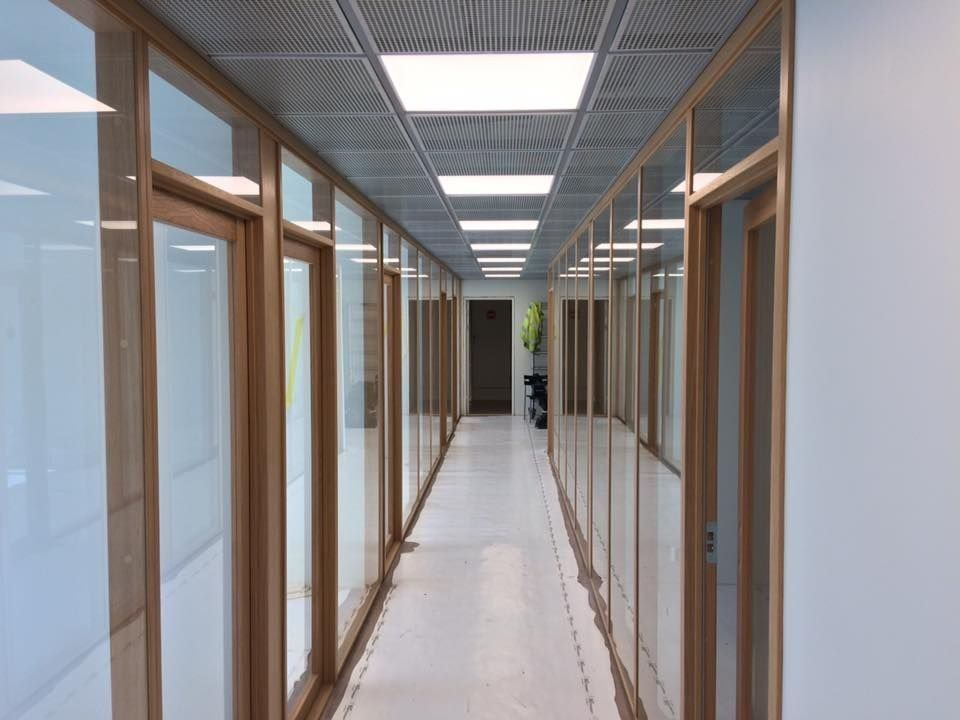
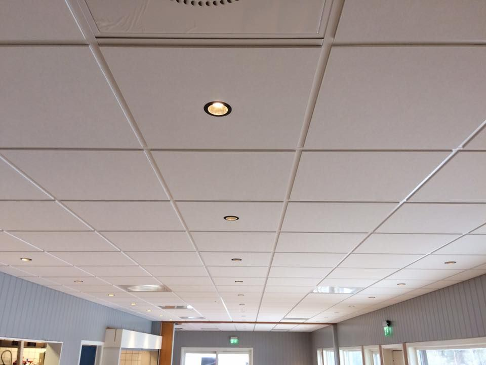
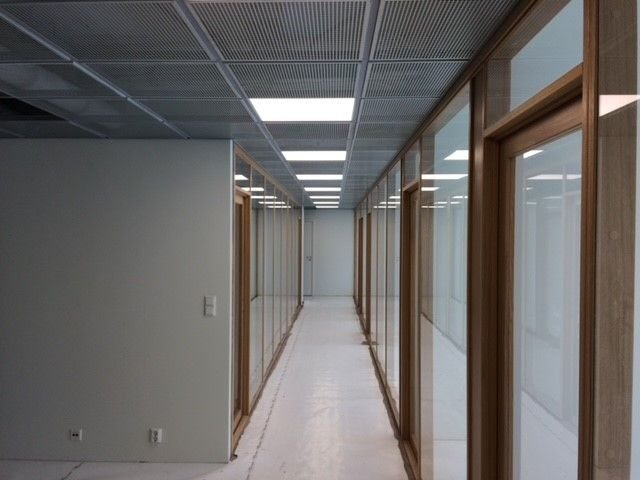
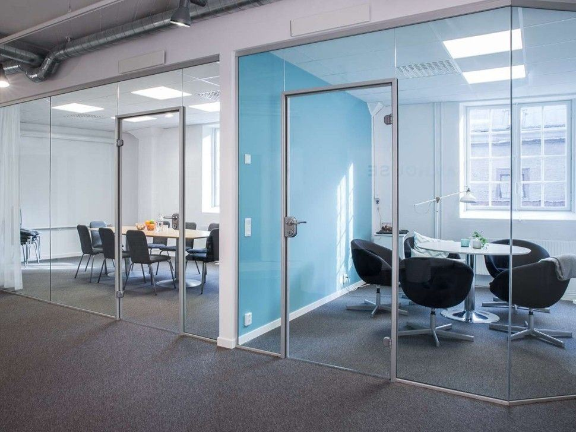
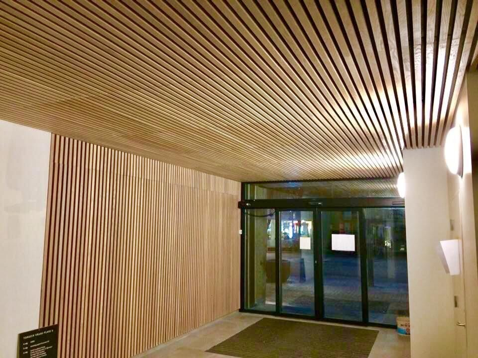

Næringsbygg · Røyken
Totalleverandør av systeminnredning i næringsbygg
Arne Himling AS har 35 års erfaring med systeminnredning i alle typer næringsbygg. Vi leverer og monterer himlinger i mineralull, metall, gips og tre, glassvegger i en rekke utførelser, skillevegger, foldevegger og datagulv.
Svar på telefon 22 12 07 00, eller skriftlig via skjemaet.

- Erfaring
- 35
- år med systeminnredning
- Ansatte
- 13
- registrert i Enhetsregisteret
- Fagområder
- 7
- fra akustikk til snekkerarbeid
- Holder til
- Røyken
- Annillaveien 3, 3440
Tjenester
Sju fagområder, levert og montert
Vi tar oppdrag i alle typer næringsbygg. Velg et fagområde, så legger vi det inn i forespørselen for deg.
-
Støyreduksjon og akustikk
Lei støy? Vi har løsninger for å få ned lydnivået i små og store rom.
-
Himlinger
Himlinger i mineralull, metall, gips og tre — i mange varianter og farger. Himlingen skjuler ventilasjonskanaler, rør, ledninger og isolasjon.
-
Glassvegger
Nytt møterom? Mer lys? Glassvegger er en moderne og populær løsning som gir en rekke fordeler for arbeidsmiljøet og kontorområdets estetikk.
-
Skillevegger
Skillevegger i gips, malt og umalt, brukes til å dele store og åpne lokaler i mindre arbeidsområder.
-
Foldevegger
Foldevegger, også kjent som skyvevegger eller skillevegger på hjul, deler opp store rom når det er behov for flere separate områder.
-
Datagulv
Datagulv gir en underliggende plass som gjør det enklere å trekke og organisere kabler uten store inngrep i byggets gulv eller vegger. Vi leverer også kanaler.
-
Snekkerarbeid
Vi tar på oss snekkeroppdrag. Arbeidet utføres av faglærte snekkere og tilpasser kontorrommene etter behovene til kunden.
Støyreduksjon og akustikk
Dårlig akustikk, støy fra sidemann eller kontor?
Støyreduksjon dreier seg om å minimere eller begrense uønsket lyd og støy i et bygg eller kontormiljø. Ulike støykilder — trafikk utenfor, maskiner, samtaler og annen aktivitet innendørs — kan påvirke arbeidsmiljøet negativt.
God akustikk er viktig for å sikre klar taleforståelse, unngå ekko og etterklang, og skape et balansert lydmiljø. Ta kontakt for utredning og utbedring.
Ta kontakt for utredning
Slik jobber vi
Fra utredning til ferdig rom
-
01
Utredning
Ta kontakt, så går vi gjennom støykilder, rom og behov før noe bestilles.
-
02
Levering
Himlinger, vegger og gulv leveres i mineralull, metall, gips, tre og glass.
-
03
Montering
Monteringen utføres av faglærte snekkere og tilpasses kontorrommene.
Referanser
Fra referansene våre
Glass, tre og perforert metall går igjen i det vi leverer.
-

Glassvegger i eik
Himling i perforert metall.
-

Møterom i Asker sentrum
Møterom for kommunesammenslåing Asker, Røyken og Hurum. Glassvegger 32 dB, NCS S7500N.
-

Himling i heltre eik
50 % av himlingen har demonterbare felter for enkel tilgang til overliggende installasjoner.
Kontakt
Send forespørsel — også når vi står i arbeid
Velg tjeneste og skriv kort om rommet. Du får en kvittering med referansenummer med én gang, og kan sende forespørselen videre til salg@himling.no.
- Adresse
- Annillaveien 3, 3440 Røyken
- Telefon
- 22 12 07 00
- E-post
- salg@himling.no
- Org.nr
- 997 818 784
- Arne Himling på Facebook
Kvittering
Forespørselen er registrert
Referanse AH
Ingenting er sendt eller lagret. Knappen åpner e-postprogrammet ditt med forespørselen ferdig utfylt.